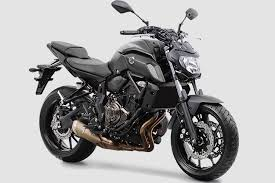
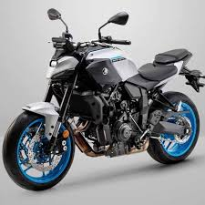

MT-07
| Marca |
Modelo |
Ano |
Preço |
Oleo |
| Yamaha |
MT-07 |
2016-atual |
R$34.133,00 |
SAE 10W-40 |
- Curiosidade 1: usa o motor CP2 de 689 cc com conceito inspirado na filosofia crossplane..
- Curiosidade 2: versões antigas consideradas muito perigosas devido a falta do sistema de controle de tração.
- Curiosidade 3: A sigla “MT” nasceu de “Master of torque.
- Curiosidade 4: Torque: 6,9 kgf.m a 6.500 rpm

